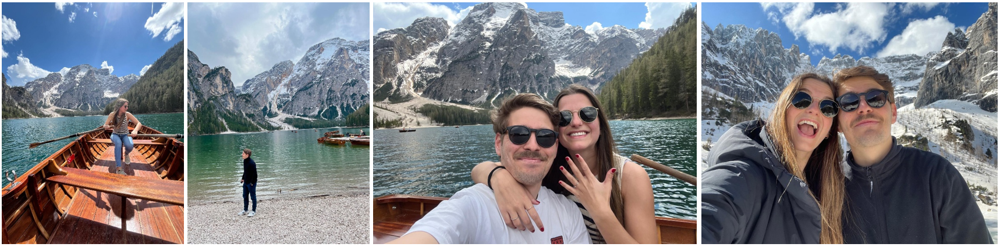

bienvenido al autobús
Mante & Moni
13 · junio · 2026
🚌 Trayecto en curso
En camino
Salida
19:25
Llegada
20:00
—
minutos para llegar
Lo que queda de celebración
19:25
🚌 Salida de los autobuses
20:00
🥂 Bienvenida & cóctel - Finca El Pendolero
22:00
🍽️ Cena
23:30
🎸 ¡Empieza la noche!
01:00
🪩 ¡Que siga la fiesta!
02:00
🌅 Primer autobús de vuelta - Destino: Pozuelo y Moncloa
05:00
🌅 Último autobús de vuelta - Destino: Pozuelo y Moncloa
💌 Déjanos tu mensaje
nuestra historia
Las segundas partes
son las mejores
son las mejores
Verano 2016

El primer capítulo
Viaje a Mallorca. El segundo día de playa, Mante va a saludar a sus ex-compañeros de Los Robles, sin saber que ver a Moni por casualidad será el inicio de muchos años de risas, complicidad, viajes improvisados y cervezas y conversaciones infinitas en Avenida de Europa. La vida nos juntó con fuerza y, como pasa a veces, también nos separó.
Si Mante la conquistó con unos pantalones amarillos mientras bailaba el Coyote, estaba claro que era para toda la vida.
2019 – 2022

El paréntesis
Cada uno siguió su carrera, su trabajo, su año en el extranjero, su camino. Sin saberlo, los dos se estaban preparando para lo que vendría. Aún con todos los giros de guión sobrevivimos, crecimos, y siempre hemos tenido algo que no se ha ido nunca: nosotros.
Y desde entonces, para siempre.
Enero 2022

Y desde entonces, para siempre
El segundo round. Año nuevo, vida nueva. Aunque esta vida, en el fondo, ya la conocíamos. Vuelta a casa.
Al parecer, fuimos los únicos en darnos cuenta que teníamos que estar juntos
Mayo 2025

La pregunta ✨
En una barca en medio del Lago di Braies, Mante se arrodilló jugándose el tipo. Moni, tras minutos de incredulidad y lágrimas, dijo sí.
Todo acabó con un "Rema rema, que nos cobran 50€ más
13 · JUNIO · 2026
✦ vuestra historia ✦
Los recuerdos
que nos unen
que nos unen
Herrera del duque · Desde siempre
Nuestro sitio de reunión
Hay familias que se construyen de arriba a abajo, de abuelos a biznietos. Los abuelos — Pizca y Raimundo — se encargaron muy bien de ello. Formaron familia en el campo con paellas y barbacoas en Semana Santa, navidades de villancicos y regalos de Papá Noel, aperitivos y comidas en la piscina… Siempre atentos de reunir a la familia.
Una familia unida, lo aguanta todo junta.
El legado continúa · Para siempre
Las nuevas matriarcas
Dos nuevas matriarcas a la cabeza — Pepa y Paloma — con el mismo objetivo: reunir y hacer crecer la familia. Cambiamos el campo por la piscina, cambiamos Madrid por Pozuelo, cambiamos croquetas de la abuela por biberones de Sarita Jr...
La situación cambia, pero las ganas de seguir estando juntos, no.
Hoy la familia crece · 13 junio 2026
La mesa se hace más grande
Hoy la familia crece con Moni. Un plato más en la mesa, nunca es un problema para la familia Zárate. Moni lo está haciendo muy bien, veremos ahora que no hay vuelta atrás.
Días de Madrid
De casa en casa y tiro porque me toca
La familia siempre reunida para momentos especiales. Desde la casa de la tía Belén en los días de reyes, pasando por visitas a Arenas de San Pedro de la tía Maribel y terminando con el roscón de primos todas las navidades por Pozuelo. En cualquiera de las reuniones, siempre había tiempo para las risas y las actualizaciones del mundo del corazón capitaneadas por la prima Belén.
Siempre rodeados de cerveza, encurtidos y buena compañía.
Otra boda · 13 junio 2026
Uno de los días más importantes de nuestra vida
Otro primo más se presenta al altar en busca de un amor para toda la vida. Tras celebrar juntos por todo lo alto las bodas de Isa, Ignacio, Belén e Ignacio, hoy se reúne la familia de nuevo para la boda de Gonzalo. Mismo plan, otro terreno de juego, misma diversión.
¡QUE VIVAN LOS NOVIOS!
A pesar de la distancia
La familia que no necesita el día a día para estar cerca
Hay familias con las que compartes el día a día. Y otras con las que compartes algo igual de importante: la sensación de cercanía aunque pase tiempo entre visita y visita. Basta con reencontrarse para sentir el cariño y el cuidado — y hacer que Moni se sienta acogida cada vez que vuelve. Y sienta también dolor en los pies por no dejar ningún kilómetro de Barcelona sin recorrer.
Siempre rodeados de llardons y mucha, mucha comida.
El día que la familia crece · 13 junio 2026
Hoy la mesa se hace más grande
Hoy la familia crece con Mante. Y esta familia, que sabe recibir, lo recibe como uno más. Hoy la mesa se hace más grande. Y eso siempre es motivo de celebración.
La familia no se elige
Y sin embargo, es el mejor regalo
Los Sánchez pusieron cada uno su parte para hacer de Moni la persona que hoy se casa. Y aunque hoy celebramos una boda, también celebramos algo más grande: la suerte de tener una familia con esa manera de cuidarse, de reírse, de opinar todos a la vez y de convertir cualquier reunión pequeña en algo parecido a un plató de Telecinco — cumpleaños, navidades, domingos, Valdeverdeja cada verano o cualquier otro momento improvisado.
Junta. Celebrando. Y con mucha Mahou disponible.
Los que lo hicieron posible
La familia multiprovincial siempre unida
Pepita y Agustín, con ayuda de Caconchi, construyeron esta familia multiprovincial — con especial mención al arte sevillano — siempre unida en momentos especiales, cercana, ruidosa a veces (muchas veces) y siempre dispuesta a jugar al parchís sea donde sea. Y aunque hoy haya emoción, nostalgia y alguna lágrima inevitable por este último año que ha sido especialmente difícil para todos, también hay algo muy bonito: la sensación de que la familia sigue estando exactamente donde tiene que estar.
El día que la familia crece · 13 junio 2026
Ya no tiene escapatoria
Hoy la familia crece con Mante. Por ahora no lo ha hecho mal. ¡Deseémosle suerte a partir de ahora que ya no tiene escapatoria!
El origen · Septiembre 2007
Escuelas Pías de San Fernando
Primero de la ESO. Pasillos nuevos, caras nuevas y una mezcla de miedo y emoción que sólo conoce el que se ha cambiado de colegio. Mante llegó y le llamaron masserati, vió a gente intentando agredir con un martillo, noviazgos express de dos días, gente que pedía cambio de clase por los pasillos, patios por colores, collejas por doquier, fumadores de papel... Mante no entendía nada pero se estaba empezando a formar algo que ninguno buscaba pero que todos necesitabais: el Grupo. Casi 20 años desde ese septiembre, y aquí seguís... metidos en un autobús rumbo a la boda de uno de los vuestros. Si eso no es amistad, no existe ninguna palabra para describirlo.
Piedad y letras.
Los números · 2007 – 2026
Casi dos décadas en datos
+19
años juntos
∞
noches épicas
3
bodas
Primero de la ESO era 2007. Han pasado cambios de colegios, selectividad, viajes (Mallorca, Gandía, Interrail, Mojácar, Algarve, Carapanas, Surf, Tarifa), rupturas, reencuentros, despedidas de soltero y alguna que otra crisis existencial compartida. Y el grupo sigue unido, a su manera, pero siendo GAFOTAS TE MATO.
Los Leones · Riaza
La sede del comer y el buen beber
Receta infalible: menú diseñado por el artista Edwin, a los fogones ejecutando el gran Mante, vino elegido y cerveza Mahou Clásica (siempre en botellín) asistidos por la leyenda de las barras Yambinator y set de juegos de la mano de Sergio Nadal Pareda. Empezamos siendo cuatro y terminamos siendo ocho (Celu, Moni, Alba e Isa). El equipo crece, pero la receta seguirá siendo la misma. Éxito asegurado.
Riaza unió lo que Madrid estaba pidiendo a gritos.
6 de junio de 2026 · Que vivan los novios
Recién casados
Sergi y Celu llevan casados UNA SEMANA. Una. Y aquí están… en otro autobús rumbo a otra boda. Eso se llama darlo todo por el equipo. Mante y Moni no piden más, simplemente desearles una fantástica luna de miel y trasmitirles la enorme felicidad de que hayan podido estar aquí.
Recién casados y ya en otra boda. Agradecimiento eterno.
Una vida entera
El colegio que lo fue todo
Muy poca gente puede decir que ha pasado toda una vida en el mismo colegio. Moni sí. Y Los Robles ha sido el escenario completo de prácticamente media vida — y de prácticamente la otra media que le espera, porque todas las personas que le dio ese colegio siguen y seguirán en su vida. Y aquí estáis. Personas que estuvieron mucho antes de saber quién era, y en absolutamente todas las etapas: con los punzones en infantil, los parques de bolas en cumpleaños, las excursiones y los esquís, los muchos dramas adolescentes y esa época especialmente complicada en la que todos pensaban que vestir mal era tener personalidad (y el flequillo también).
¡¡Que viva el B!!
Los que lo saben todo · 25 años después
Con demasiada información comprometida
Lo bonito de los amigos del colegio es que conocen versiones de Moni que ya ni existen. Y aun así siguen eligiéndola, con demasiada información comprometida. Después de tantos años, ya no hace falta impresionar a nadie. Y eso da muchísima paz. Y entre toda esa historia también apareció Mante — porque antes de ser el novio ya fue parte del colegio. Aunque luego abandonó por Escolapios, el destino ya había dejado el señuelo preparado bastante antes. Y aquí estamos, 25 años después, el día de su boda. Como diría ella: "yo, que soy un bebe."
Todo lo que soy viene de haber crecido rodeada de vosotros.
Los responsables de la mayoría de las anécdotas
El mejor equipo no se elige: se forma solo
El Team nació de una fusión random de personas y colegios. En algún momento del camino dejaron de ser "los tuyos" y "los míos" para ser simplemente "los nuestros". Esta noche tenemos el Team al completo. Toda persona necesita un grupo así — muy diverso, que convierta cualquier comida tranquila en una historia, cualquier viaje en un caos organizado y con quienes no hace falta pensar demasiado las cosas porque todo funciona mejor cuando estáis todos. Incluso las malas ideas.
Los mejores grupos no siempre toman buenas decisiones. Pero sí generan las mejores historias.
El historial habla por sí solo
Relativamente funcionales hasta esta boda
Viendo el historial del grupo, que hayamos conseguido llegar todos relativamente funcionales hasta esta boda ya es motivo suficiente para brindar. ¡Preparad las copas!
El trabajo de Mante · Cada día
Los que aguantan a Mante de lunes a viernes
Hay un mérito especial en conectar con alguien después de haberle visto en modo trabajo. Entregas ajustadas, solicitud de recursos finitos por UG, propuestas de última hora, IA. Vosotros habéis pasado por todo eso con Mante y aquí seguís. Hoy os toca verlo en su mejor versión: fuera de la oficina, con un anillo recién puesto y a punto de celebrarlo con todos vosotros.
La sostenibilidad no es una moda, aunque cueste explicarlo.
Fuera de la oficina · Las comidas/tardes/cenas de equipo
Cuando el equipo se convierte en algo más
Siempre alrededor de O'Donnell, rodeados de buena comida e infinita bebida, se empezaron a forzar las grandes amistades dentro de Nfq. Gregor y Martín nos unieron... y el resto de la historia todavía está por completar.
El día a día de Moni
Siete años dan para mucho
Hay compañeros de trabajo. Y luego están las personas con las que compartes tantas horas, tantos días y tantas versiones de ti mismo, que acaban formando parte muy importante de tu vida. Con vosotros Moni ha crecido muchísimo — profesionalmente, claro; pero sobre todo personalmente. Tantas épocas buenas y malas, tantas rutinas compartidas, tantos deadlines dramáticos, los mil mensajes y varios cafés al día, algún que otro viaje profesional (y no profesional), cenas y cervezas, audios eternos, eventos varios y esa unión tan especial que solo nace cuando varias personas sobreviven juntas a suficientes lunes.
Mucha gente encuentra trabajo. Pero no todo el mundo encuentra equipo.
Dentro y fuera del trabajo · Todos esos años
Parte de la historia de Moni
Todos esos años hacen que hoy no vengáis como compañeros, sino como parte de la historia de Moni, tanto dentro como fuera del trabajo. Y eso no tiene precio.
Plaza de Toros · El concierto de Estopa
Donde todo empezó
Tres jóvenes moglis de la capital fueron al concierto de Estopa en su pueblo. A la salida, le esperaba un grupo que se hacían llamar Los Berrengues. Nada podía salir mal. Tras la primera noche, entre ronda de chistes, peleas, algún que otro ligoteo HISTÓRICO y un coma etílico… forjaron el cóctel perfecto para una acogida inolvidable. El patriarca Sete aceptó a los nuevos berrengues, y el resto, es historia.
Nacieron los Berrengues Buenos con sus berrenguillas.
Las fiestas del pueblo · Cada agosto
Las noches que no tienen hora de fin
Las fiestas del pueblo tienen una magia que no existe en ninguna ciudad. Sin prisa, sin planes fijos. Matiné, cervezas de Mahou a 42 ºC, caldereta del Ayto, conciertos de King Africa o El Duende Callejero, conciertos nocturnos de Melendi, orquesta Las Estrellas, Discoteca Tucán. Cuando las noches terminaban, empezaban las vueltas: sol de cara, bocadillo con extra de Bayonesa, fotos varias (con el Taxi, la puerta La Cana, la terraza de flores, burros, cerdos y su cerveza de comentada de rigor). Gonzalo creció en esas noches. Y algo de esa magia se quedó en él para siempre.
Las mejores noches huelen a verano en Herrera del Duque.
El sitio al que siempre se vuelve · Raíces
De esos sitios que terminan formando parte de quién eres
Hay sitios a los que vuelves y el tiempo no ha pasado. Las mismas caras, los mismos lugares, la misma sensación de que aquí todo va bien. Pola es eso para Moni. Un sitio que ha terminado formando parte de quién es. Y hoy ese trozo de su vida está aquí, celebrando por todo lo alto — como siempre.
A Pola siempre se vuelve. Y siempre sienta bien.
Los amigos del pueblo · Cada verano
La versión más libre, sin horarios ni prisas
Los amigos del pueblo tienen algo especial porque no aparecen en las etapas típicas de la vida. No vienen del colegio ni de la universidad ni del trabajo. Son personas que te conocen desde otra versión — una más libre, sin horarios, sin prisas. La versión que vive pendiente de que llegue agosto durante todo el año. Con mil historias imposibles de explicar del todo. Horas eternas en la calle. Fiesta tras fiesta, prao tras prao. Veranos que parecían durar muchísimo más de lo que realmente duraban. Y esa magia tan concreta de reencontrarse cada año como si no hubiera pasado el tiempo.
Getafeñas · Aquellos años
Cuando todavía no sabías muy bien quién eras
La universidad tiene algo irrepetible: es ese momento raro de la vida en el que todavía no sabes muy bien quién eres y tienes la sensación de que el mundo entero está por descubrir. Hay exámenes, trabajos, muchos cafés y muchas más cervezas, mucho juernes y mucha distancia hasta Getafe. En ese momento de libertad y caos se forjaron estas amistades. Lo bueno de la universidad es que, aunque la vida luego coloque a cada uno en un sitio distinto, hay personas con las que siempre vuelves exactamente al mismo lugar — a la misma confianza y a esa sensación de que ha pasado mucho tiempo pero nada ha cambiado.
La UC3M te da una carrera, pero, si tienes suerte, también te da a estas personas.
Universidad Autónoma de Madrid · Juanito
De Coopera a Bristol pasando por Bratislava
La dura vida de la auditoría financiera en PwC los juntó. La fiesta de Navidad con Hombres G en el escenario los unió… y una noche en Mawi los consagró. Así es como se forjan las amistades que duran para toda la vida.
Complicidad en los mejores y peores momentos.
Los vecinos de Pozuelo que acabaron siendo amigos
Lo de vecinos era solo el principio
Hay vecinos y hay vecinos. Los primeros son los que saludas por la calle desde lejos o en la puerta de tu urbanización. Los segundos son los que terminan en tu boda, porque crecer cerca acaba significando crecer juntos. Los vecinos de Pozuelo forman parte de esa categoría maravillosa de personas con las que compartes la vida sin darte cuenta desde siempre. Con vosotros no hace falta explicar demasiadas cosas porque compartís las mismas calles, y muchos de los mismos cotilleos y grupos desde hace años.
Un día simplemente empezáis a formar parte de todos los recuerdos.
Los mejores planes · Sin organizarse demasiado
Cualquier bar puede convertirse en punto de reunión
Con vosotros, Moni y Mante aprendieron que los mejores planes normalmente ocurren sin organizarse demasiado. Que cualquier bar puede convertirse en punto de reunión y que siempre hay una próxima vez.
Las que cruzaron océanos y volvieron con amigas · Aquella aventura
Irse lejos para encontrar lo mejor
Australia no es un destino cualquiera. Es una decisión. La de dejar lo conocido, cruzar el planeta y ver qué pasa. Y ahí estaban ellas. Eso es lo que tiene irse lejos: que encuentras gente que te ve sin contexto, sin historia previa, sin expectativas, sin red de seguridad. Y eso crea un vínculo diferente. El hecho de que ese vínculo haya sobrevivido al tiempo y a la distancia ya dice todo sobre el valor que tiene. Y hoy están aquí.
Aquí, y al otro lado del mundo también.
La familia sin apellidos · Siempre
Parte de la historia completa, por extensión y por contagio
Hay personas que no son familia, pero que esta noche son parte de la historia completa, por extensión y por contagio de la energía de la familia. Hay personas que están desde el primer día, desde antes incluso de que tú lo recuerdes, desde el punto de partida. Otras llegaron más tarde a través de hermanos, y se convirtieron rápido en parte importante de la familia. Porque al final las familias también se construyen así: a través de la gente que decide quedarse cerca de ti y tus seres queridos durante años, incluso décadas.
Las mejores familias siempre tienen gente que llegó sin compartir apellido.
✦ el oráculo ✦
Búscate y
descubre tu verdad
descubre tu verdad
🔮 El oráculo te espera…
🎯 trivial
¿Cuánto sabes de
Mante & Moni?
Mante & Moni?
respuestas correctas